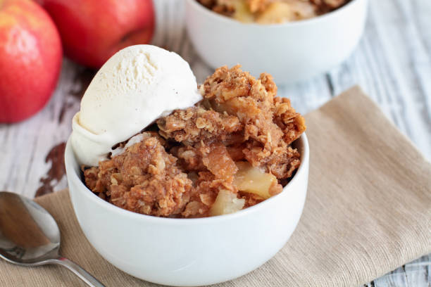

Apple Cobbler

This super-easy cobbler is great for unexpected company or spur-of-the-moment cravings.
The juice from the fruit cooks out to produce enough moisture to make this cobbler delicious.
You can also use fresh peaches instead of apples.
This recipe is by Scottley from AllRecipes
Prep time:20 mins, Cook time:30 mins, Additional time:10 mins, Total time:1 hr
Servings:9
Ingredients
- 1 cup self-rising flour
- cup white sugar
- ½ cup butter, softened
- ½ teaspoon ground cinnamon
- 4 Granny Smith apples, cored and sliced
Directions
- Preheat oven to 350 degrees F (175 degrees C). Grease a 9x9-inch baking dish.
- Mix flour, sugar, butter, and cinnamon together in a bowl using a pastry blender or fork until crumbly;
reserve 3/4 cup flour mixture to use as topping.
- Sprinkle a light layer of flour mix into the prepared baking dish; top with a layer of apples.
Continue alternating layers of flour mixture with apples and ending with apples.
Sprinkle top apple layer with the reserved 3/4 cup flour mixture.
- Bake in the preheated oven until apples are tender and topping is lightly browned, 30 to 35 minutes.
Allow cobbler to cool for 10 minutes before serving.